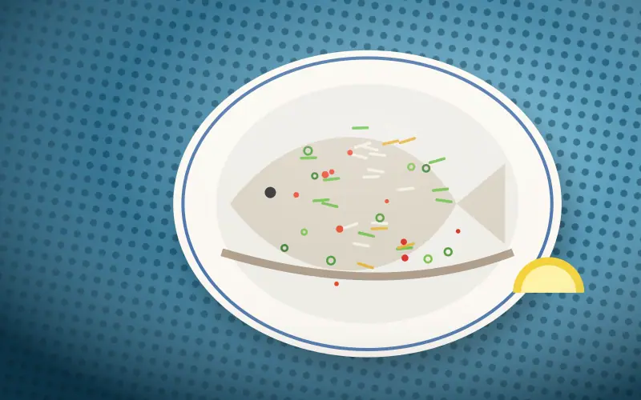

鮮 · Seafood平EVERYDAY
Tuen Mun · Tuen Mun
Sam Shing Hui Seafood Street
三聖墟海鮮街
Pick live seafood, restaurants cook it — garlic prawns即揀即煮：蒜蓉蒸蝦
~$120typical spend
50/100
HK Cheap Eats Value Score · Average valueEstimated from the editors’ rating, price vs similar seafood places and MTR access. Portion size and customer reviews aren’t scored yet. How it’s calculated
- Hours
- 11:00 – 23:00
- Best for
- Dinner
- Nearest MTR
- Tuen Mun 屯門 · 26 min walk
- Pay with
- Octopus · Card · Cash
- Cuisine
- Seafood 海鮮
- Area
- Tuen Mun 屯門 · Tuen Mun 屯門區
- Status
- Unverified
- Source
- HK Cheap Eats editors
- Listed
- 14 Nov 2026
- Price last checked in store
- Not yet
Picture is an illustration, not a photo of this restaurant. Spotted a wrong price or hours? Suggest a correction in the app.